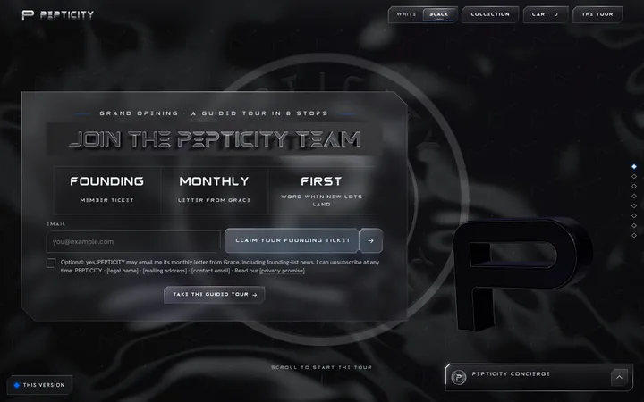
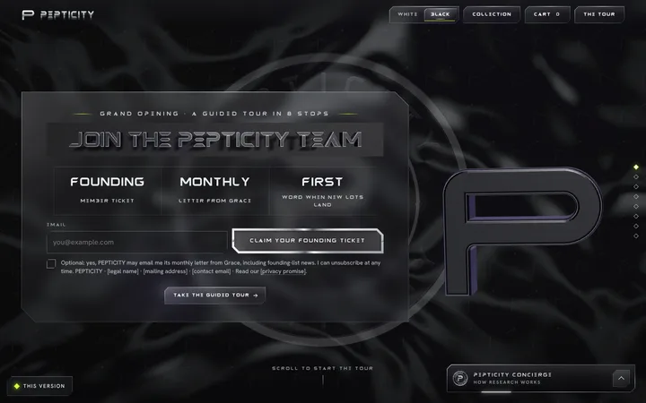
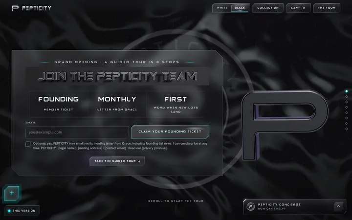
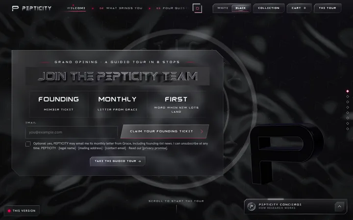
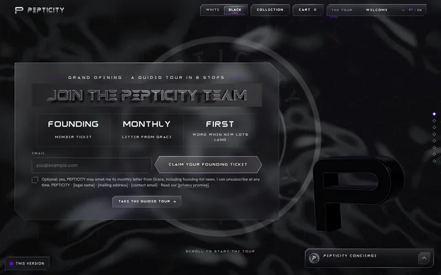
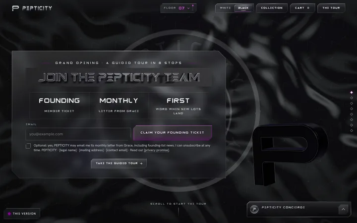
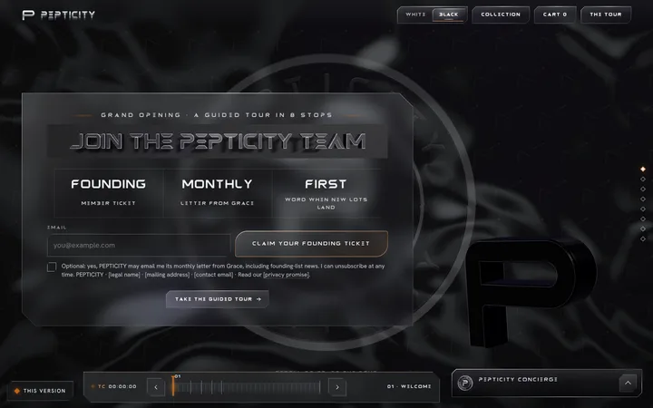
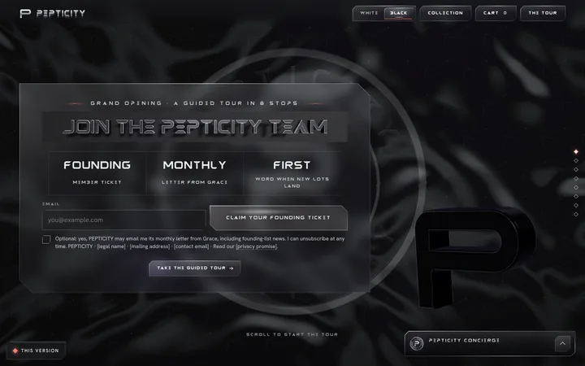

VERSION 01
ORIGINAL PICKS
#0066FF
- NAV-102Split PreviewTHE TOUR menu (top right): the 8 stops with a live preview
- BTN-101Torn StubMain sign-up buttons: CLAIM YOUR FOUNDING TICKET and SEND MY SHORTLIST
- CRD-118Squircle StackText alerts card (FIRST WORD, BY TEXT)
- SCR-102Fan DeckThe six-card scroll section: HOW WE CHOOSE
- TXT-04Scroll HighlightBoth big reading statements (BEFORE YOU BUY ANYTHING, THE PEPTICITY PROMISE)
- HOV-103Edge LightHover on the top menu buttons and every card group (markets, deck, bento, tiers, collection, sign-up cards)
- BGD-102Plexus FieldQuiz panel background (FOUR QUICK QUESTIONS)

VERSION 02
CHROME
#D4FF3A
- NAV-101Curtain LettersTHE TOUR menu (top right)
- BTN-109Chrome BezelMain sign-up buttons (founding ticket + send my shortlist)
- CRD-108Bezel PlaqueText alerts card (FIRST WORD, BY TEXT)
- SCR-16Exploded LayersHOW WE CHOOSE (the six-step scroll section)
- TXT-104Scatter AssembleThe two big reading statements
- HOV-102Letter RollHover on buttons, cards, choices and links
- GLS-103Molten NumeralsStep numbers in HOW WE CHOOSE and THE LAB

VERSION 03
LIQUID
#0FFFFF
- NAV-104Thumb ArcTHE TOUR menu: the corner button (bottom left) fans the 8 stops out along an arc; THE TOUR in the top bar opens it too
- BTN-110Liquid StretchMain sign-up buttons: CLAIM YOUR FOUNDING TICKET (hero) and SEND MY SHORTLIST (four questions)
- CRD-109Liquid GlassText-alerts card (FIRST WORD, BY TEXT)
- SCR-103Frame TunnelHOW WE CHOOSE: the six-step scroll section
- TXT-103Tide FillBoth big reading statements (BEFORE YOU BUY ANYTHING, THE PEPTICITY PROMISE): words fill white, key phrases in cyan
- HOV-101Rising TideHover and focus on every glass button and tour stop; a rising tide of light on cards
- ILL-102Caustic GlassBRING A FRIEND IN section: caustic light under the card

VERSION 04
BOLD
#FF004F
- NAV-103Ticker NavTop menu: the 8 tour stops run as a ticker in the top bar (its own strip on phones); THE TOUR button jumps into it
- BTN-124Magnet PullMain buttons: CLAIM YOUR FOUNDING TICKET (hero) and SEND MY SHORTLIST (four questions)
- CRD-117Split ShardText alerts card: the sample text and FIRST WORD, BY TEXT split apart with light in the crack
- SCR-105Grid BloomThe HOW WE CHOOSE scroll section: five checks hold, the centre tile blooms into YOUR QUESTIONS
- TXT-102Throttle MarqueeBig reading statements: marquee bands above and below; the statement lights word by word, key phrases in red
- HOV-105Plucked StringHover on menu links, text links and every button label: a plucked string
- TRN-101Venetian WipeBetween sections: venetian slats close as each section scrolls in

VERSION 05
PRISM
#6F00FF
- NAV-105Chapter RollTHE TOUR menu (top right): names the stop you are at and rolls to the next; tap for the 8 stops
- BTN-111Prism EdgeSign-up buttons: SEND MY SHORTLIST and GET GRACE'S LETTER
- CRD-110Prism FacetsText alerts card (FIRST WORD, BY TEXT)
- SCR-17Word PortalThe scroll section HOW WE CHOOSE: fly through the word CHOOSE, then the six steps
- TXT-04Scroll HighlightBoth big reading statements, key phrases in a prism gradient
- HOV-103Edge LightHover on the top menu buttons and every card group (markets, six steps, bento, tiers, collection, sign-up cards)
- BTN-106Hex BloomMain CTA: CLAIM YOUR FOUNDING TICKET (hero)

VERSION 06
GLASS
#8D029B
- NAV-04Elevator FloorsTHE TOUR menu: a floor readout in the top bar counts down to G as you go deeper; THE TOUR opens the brushed-metal panel with a floor button for each of the 8 stops
- BTN-118Thick GlassMain sign-up buttons: CLAIM YOUR FOUNDING TICKET (hero) and SEND MY SHORTLIST (four questions)
- CRD-107Double PaneText-alerts card (FIRST WORD, BY TEXT)
- SCR-18Card StackHOW WE CHOOSE: the six-step scroll section
- TXT-101Orbit CaptionBig reading statements: a turning caption seal beside each one; the words light up white, key phrases in orchid
- HOV-101Rising TideHover and focus on every glass button; a rising tide of light on cards
- GLS-101Two-Piece GlassFounding offer card (YOUR FOUNDING TICKET, first card in the city)

VERSION 07
CRAFTED
#C46210
- NAV-17Timeline ScrubberTop menu (THE TOUR): a film timeline along the bottom, one chapter mark per tour stop; THE TOUR button hands focus to the playhead
- BTN-125Leaf TurnMain buttons: CLAIM YOUR FOUNDING TICKET (hero) and SEND MY SHORTLIST (four questions)
- CRD-130Hinged DoorsText alerts card: two glass doors on chrome hinges open onto the TEXT ME form
- SCR-101Flipbook ScrubThe HOW WE CHOOSE scroll section: the lab film plays like a flipbook while the six checks change beside it
- TXT-103Tide FillBig reading statements: outlined text fills white like rising water, key phrases in copper
- HOV-102Letter RollHover on every button and text link: letters roll to a copper italic twin
- OBJ-101Blacklight RelicMedallion moment after THREE WAYS TO BELONG: the founding relic under a UV torch (the watermark coin is untouched)

VERSION 08
SOFT
#FA8072
- NAV-101Curtain LettersTHE TOUR menu (top right), soft curtain
- BTN-119Jelly PressMain sign-up buttons (founding ticket + send my shortlist)
- CRD-111Etched BubbleText alerts card (FIRST WORD, BY TEXT)
- SCR-19Skew GalleryHOW WE CHOOSE (the six-step scroll section)
- TXT-104Scatter AssembleThe two big reading statements
- HOV-105Plucked StringHover on buttons, cards, choices and links
- GLS-105Living CondensationGrace's letter offer in the footer (wipe the glass to read it)